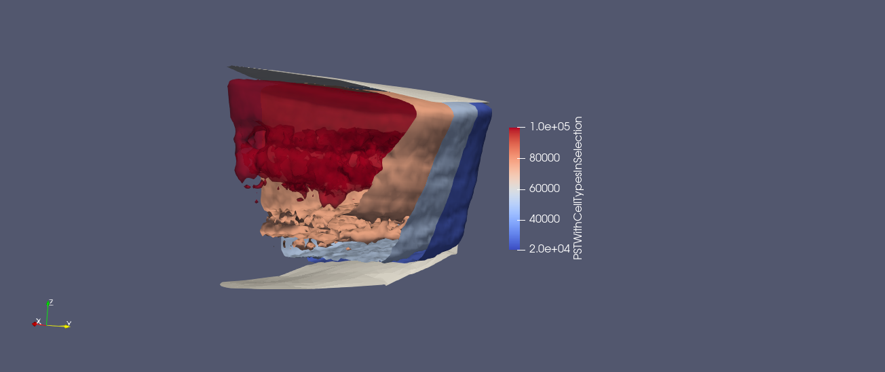

Compute synapse density mesh from a PST density mesh.
Given a PST density mesh, create a 3D mesh of synapse densities for a single postsynaptic neuron using compute_synapse_density().
It is assumed that exPST and inhPST have the same bounding box and voxel size.
This density mesh is used in SynapseMapper to assign synapses to the postsynaptic neuron.
This class is used in NetworkMapper
to compute synapse densities per presynaptic cell type for a given postsynaptic cell type and morphology.
exPST and inhPST are density meshes for normalizing post-synaptic targets.
Shown below is an example for such density field: the (25000, 50000, 75000, 100000) isosurfaces of the excitatory
PST density field for a rat somatosensory cortex (pia and white matter shown in grey at the top and bottom).

Note
The only cell type specificity that is considered here is whether or not the postsynaptic cell is excitatory or inhibitory.
Cell type wiring specificity is only considered in the network realization phase, when the synapse density field is Poisson sampled and normalized.
Then the normalization values depend on the exact presynaptic cell type.